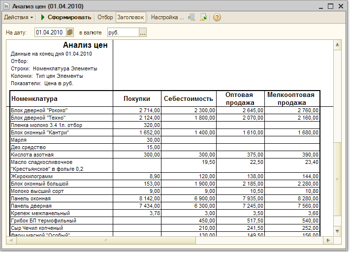

Меню Отчеты > Продажи > Анализ цен
Отчет предназначен для сравнительного анализа цен на товары у различных контрагентов, включая собственные цены компании.
Параметры формирования отчета
По кнопке "Настройка" вызывается форма настройки параметров отчета. Отчет формируется в виде кросс – таблицы, заголовками строк которой являются номенклатурные позиции (товары), а заголовками столбцов – контрагенты. Отчет строится на определенную дату по тем ценам, которые зафиксированы в регистрах сведений "Цены номенклатуры" и "Цены контрагентов".
Для формирования отчета можно указать те типы цен в справочнике "Типы цен номенклатуры", по которым были зарегистрированы цены предприятия. При этом для сравнения выводятся те типы цен контрагентов, для которых в справочнике "Типы цен номенклатуры контрагентов" указан выбранный тип цен номенклатуры.
Если тип цен в настройках отчета не указан, то анализ будет проводиться по всем ценам, зарегистрированным на предприятии и для контрагентов.
Для сравнения цен, все цены пересчитываются по отношению к базовой единице измерения номенклатуры и к выбранной в настройках отчета валюте.
Показатели
С помощью данного отчета можно проанализировать отклонения цен контрагентов от цен компании. Для анализа отклонений необходимо установить флаг в показателе "Отклонение от цены компании в %".
Группировки строк и колонок
Возможные группировки отчета:
Для групп контрагентов и номенклатуры, выводятся средние значения цен для контрагентов и номенклатурных групп, а также средние значения процентов отклонений.
